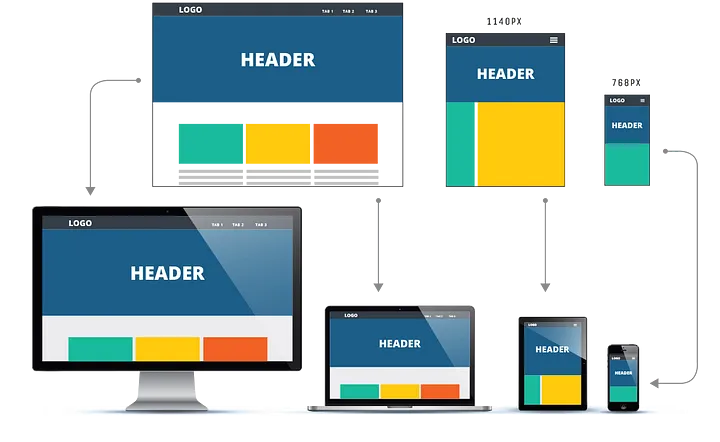
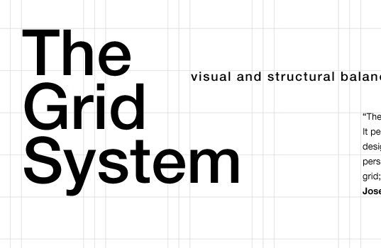
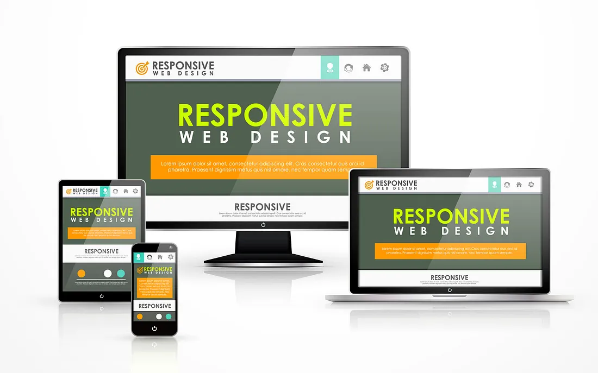
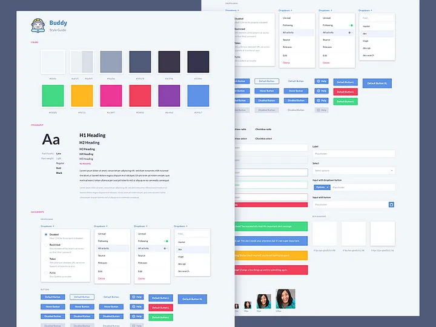
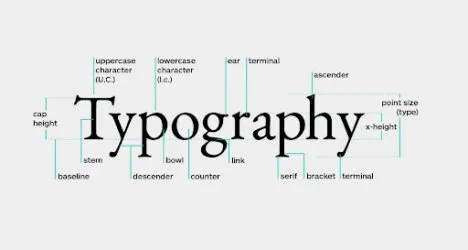

Adaptive Web
ウェブサイトがユーザーの利用するデバイスや環境に合わせて複数の異なるレイアウトやコンテンツを提供するデザイン手法。

grid_system
ウェブデザインやグラフィックデザインにおいて、要素を整理し、配置するための一貫した構造を提供するもの。

navigation
ウェブサイトやアプリケーションの文脈においては、ユーザーがサイト内の異なるページやセクションへ移動するための仕組み。

responsive_web
ウェブサイトが閲覧するデバイスの画面サイズや種類に合わせて、レイアウトやコンテンツを柔軟に変化させるデザイン手法

Style Guide
ウェブサイト、アプリケーション、またはその他の種類のコンテンツ制作において、一貫性を保つために定義された一連のルール、ガイドライン、ベストプラクティス

typography
文字や記号を美しく、読みやすく、そして効果的に配置・構成する技術と芸術